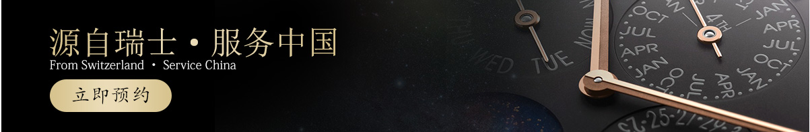

中国区
伯爵官方售后维修服务中心
PIAGET OFFICIAL AFTER-SALES SERVICE CENTER
服务中心热线
400-832-5551
服务中心地址：你身后！
伯爵官方售后服务中心
OFFICIAL AFTER-SALES SERVICE CENTER
中国·郑州

网络预约在线服务平台
OFFICIAL AFTER-SALES SERVICE CENTER
中国·郑州
服务项目: 走时故障 | 清洗保养 | 手表翻新 | 配件更换 | 个性定制 | 真伪鉴定······
服务流程
OFFICIAL AFTER-SALES SERVICE CENTER
中国·郑州


伯爵-全国服务网点
OFFICIAL AFFER-SALES SERVICE CENTER
中国·郑州
-
 联系我们
联系我们伯爵官方售后服务中心(郑州)
咨询热线:400-832-5551
客服微信:watchsa68
工作时间:9:00-19:00(节假日不休)
工作地点：郑州市金水区花园路39号国贸中心招银大厦14层1406室
地铁路线：乘坐地铁2号线至关虎屯站下车，向南步行150米至招银大厦
公交路线：乘坐公交2路、9路、26路、32路、62路、282路、B32、Y809、Y811/900路（原K9）在花园路关虎屯下车，步行至招银大厦